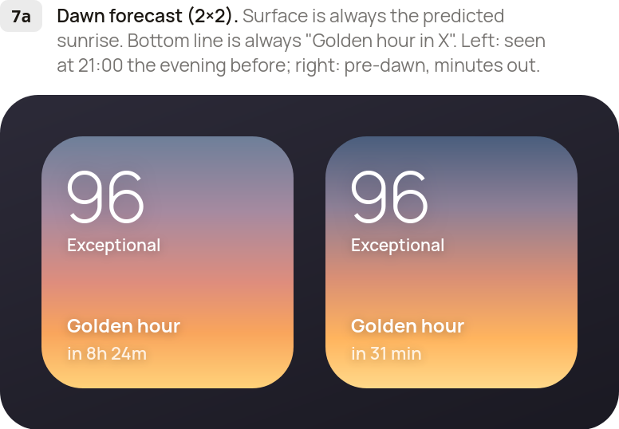
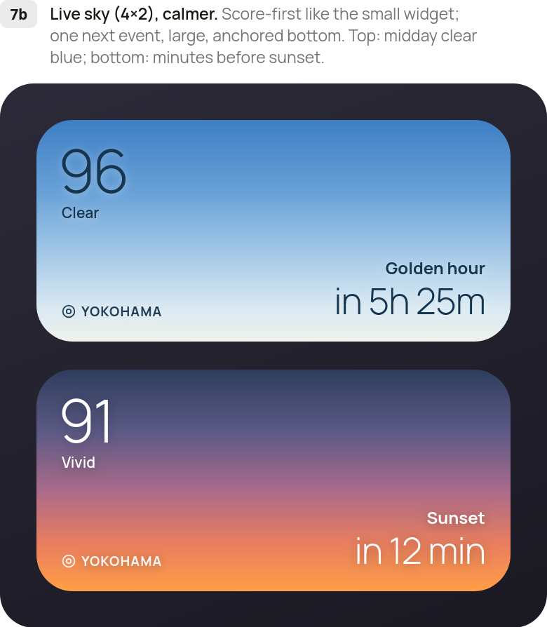
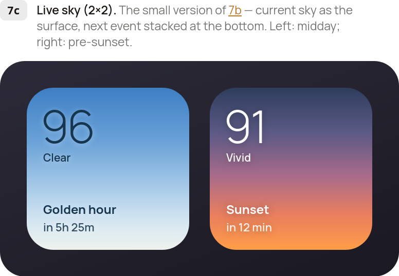
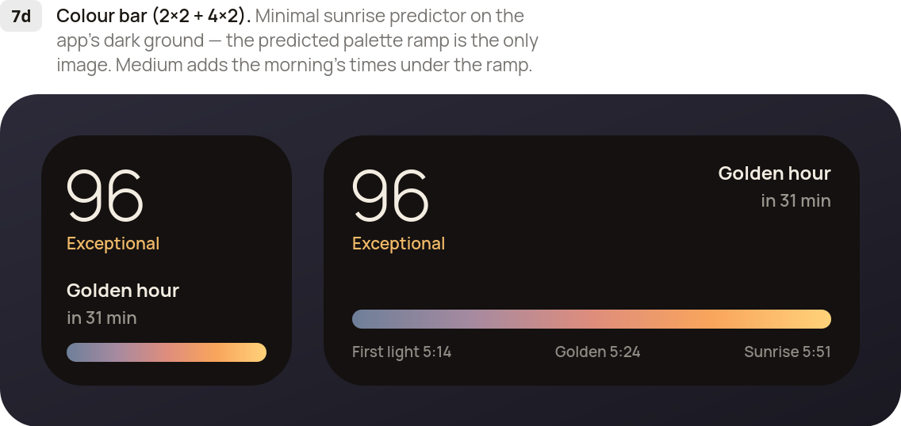

Everything on this page comes from the design phase of Sunlight and is ready to hand to implementation. The prototypes below are interactive design references built in HTML — they show the intended look and behaviour exactly, but the deliverable is a native rebuild, with SwiftUI + WidgetKit as the natural fit.
The full spec — design tokens, sky gradients, every screen with measurements, interactions, state model, and API integration points — lives in the README in this repository.
The prototype
The complete app: home with the live sky, colour analysis, calendar, locations, settings, paywall, and onboarding. Covers light & dark themes, English & Japanese, and free / trial / pro plan states.
Open → Design historyThe explorations
Turns 1–7 of the design process, kept for context. Only the turn-7 widgets (7a–7d, below) are current deliverables — earlier turns show the reasoning, not the spec.
Open →



- Full specREADME.md — tokens, type scale, all five sky gradient sets, screen-by-screen measurements, interactions, and state model.
- TargetiOS · SwiftUI + WidgetKit suggested. Measurements in the spec are CSS px at a 340×722 frame, roughly iOS points.
- AssetsNone. Every visual is code-drawn: gradients, blurred-ellipse clouds, radial sun glow, inline SVG icons, CSS logo disc.
- FontsManrope (300–800) with Zen Kaku Gothic New for Japanese, one stack, from Google Fonts.
- LocalisationFull EN/JP string tables (~70 keys) live in the prototype's logic. Theme and language swap instantly, whole app.
- AI colour analysisIn production, the expanded-sky sentence is generated per day + language (prompt pattern in the spec). This web build has no model attached, so it shows the canned per-condition fallback copy — by design.
- IntegrationsWeather/astronomy data, StoreKit (annual + monthly, 7-day trial), evening suggestion notifications, per-day alarms, widget timelines — all specified in the README.